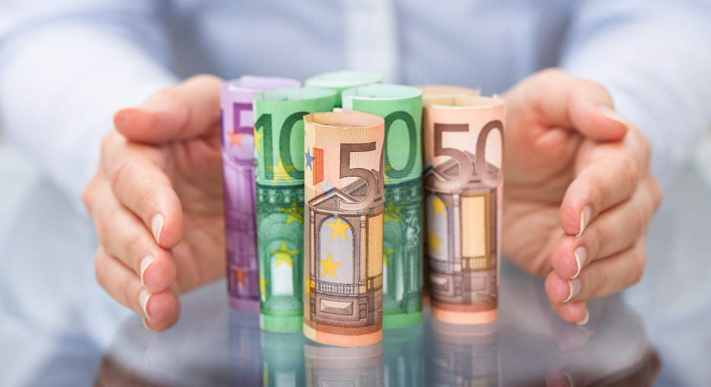

EL UNIVERSO
Cultura Deportes Economia mundial


EL PAÍS ofrece la colección
 ‘Historia de España’ para los más pequeños
‘Historia de España’ para los más pequeños
El restaurador y director de fotografía Juan Mariné, Goya de Honor 2024


Verstappen, tricampeón del mundo


Claudia Goldin se convierte en la tercera mujer de la historia en ganar el Premio Nobel de Economía
Santander, BBVA y Sabadell dejan sola a Caixa en la guerra de depósitos al 2%
El paso atrás del mercado acerca la zona de compra de bolsa europea a un 3%